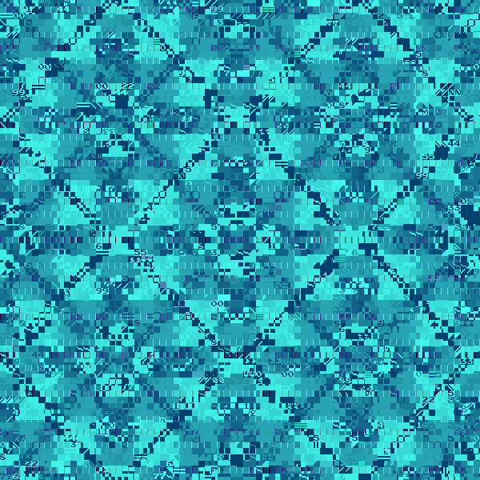
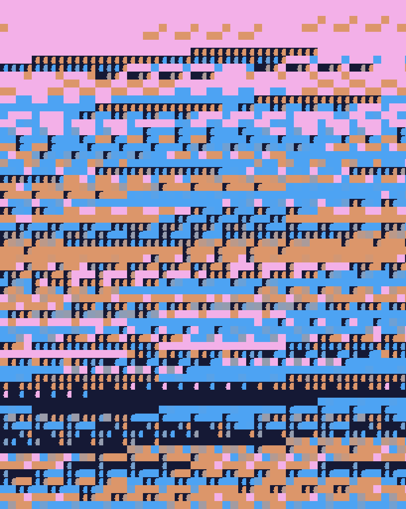
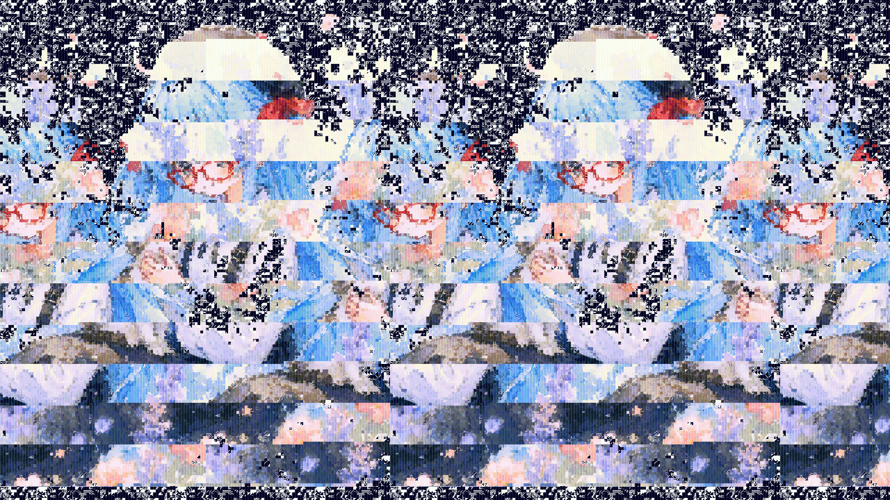

←2026年第二期 2026年第四期→
2026年07月25日
疲れていたのかほとんど寝てしまった。父の面会は今日は一旦おやすみ。
夜中に起きて来て、すき屋へ。
蛾が多い。去年もマイマイガが多かったな。
お牛丼を食べる。
駐車場に、クレヨンしんちゃんの新作映画『奇々怪々！ オラの妖怪バケ～ション』の『ヤコちゃん』のキャラクターマグネットが落ちていたので店員さんに届ける。
縁が出来た感じがして、映画が見たくなる。『ちいかわ』も見たいし……。
Twitterで見たGOROManさんの「ファミコン斜め差しを再現するエミュレータ」 がすごく面白かったです。
画像を読み込ませてタイルパターンなどを切り替えてさせるJavaScript
をCodexさんにお願いして作ってもらいました。結構面白いかも。画面上部の default.jsonを読み込む を押して、自動変化▶ を押してもらうだけでも楽しいと思います。
{kind=link}

{kind=link}

{kind=link}

2026年07月24日
新作の攻殻機動隊いい感じだ。好きですね。嬉しい。
押井版、神山版ももちろん好きですが、こちらは原作漫画の雰囲気がよく出てると思う。
父のリハビリにまた立ち会う。
今日は足を降ろして座った。頑張ってる。15分くらい座ったところで血圧が下がったので、また次回。
明日は一日休止を入れる。
毎週、最低でも土日どっちかは休みを入れるのがいいかもしれない。長期戦の見通しなので、無理せず。
ワートリ見つつ、持ち帰りの仕事を適当に。
うなぎの雑炊食べたいね。
2026年07月23日
AnimaPencilにはXLのものとAnimaのものがあると気付いた回。
- XL側のをAnima設定で回し続けて「？」となっていた。
父の様子。今回はリハビリに立ち会うことが出来た。
今日はちょっと血圧低めか。昨日は透析中にも血圧上がってたのに、と思うと明確に意識がなくても体調というのは日々変わっているのだなあと。療法士さんと一緒に声をかけて手伝い。もういい加減、さっさと起きてくれ！（ｗ
まあ、どこまで回復するものかはわからないけど、前向きでいたい。
スプラトゥーンレイダースやりたいのだが時間なし。頑張って色々片付けて遊ぶぞ。
ほっともっと亭のホルモンカルビ弁当食べる。美味しい。
2026年07月22日
父の病院。自分の寝不足がすごく、肩が焼け付くような感じだ。
リハビリの時間に、と思ったが透析していた。昨日と比べて咳き込む様子もなく落ち着いている。時々目を開く。目は合うような、合わないような。
結局透析が始まる時間が遅かったらしく、1時間半いてもリハビリの時間にならなかったので、今日は引き返すことにした。また明日。
2026年07月21日
三連休はあまり何も出来ずに終わってしまった。まあ仕方ないかなと思う……。
自分用のダッシュボード、ToDoやカレンダーの状況がなんだかスマホとPCで共有できない。
都度クリーンに読み込む+フォークしないようにできるだろうか？
前後性とかをチェックする感じ？(読み込めなかった時に危ないのではと思い、そういう時はあまり触らないようにしている)
- PC側も同状態になっていたので、多分普通にアップデート時に状態まで上書きしてしまったっぽい。バックアップをjsonで取れるようにした。
父の面会。痰が絡むらしいので呼吸器系を加湿してもらっている。しばらく横臥のままだから咳も出づらいのだろうな。
なんだかんだでもう3週間(いや、1ヶ月？)ほどになる。予定ではそろそろ退院してるくらいのつもりだったが、急変以降、なかなかの大ごとになった。それでも復活さえして来てくれれば言うことなし。明日はリハビリの時間に合わせて行きたい。
スシローで食べる。
仕事がたくさん来た。やはり連休明けは多い。がんばる。
2026年07月20日
WSLのデバイスファイルなどを観光する
set -o noclobberを先に適用して、既存ファイルへうっかり > で上書きしないようにする。
観光中は、
sudoを使わないrmを使わない/dev以下へ書き込まない/sys以下へ書き込まない
ことを徹底する。
よく聞く /dev/null をはじめとしたシリーズを見てみる。
🐈@nyankopad:~$ cd test
🐈@nyankopad:~/test$ ls -l /dev/null
crw-rw-rw- 1 root root 1, 3 Jul 17 20:21 /dev/null
🐈@nyankopad:~/test$ ls -l /dev/full
crw-rw-rw- 1 root root 1, 7 Jul 17 20:21 /dev/full
🐈@nyankopad:~/test$ ls -l /dev/zero
crw-rw-rw- 1 root root 1, 5 Jul 17 20:21 /dev/zeroこれらは絶対パス /dev/... の中にある、というイメージ。crw-rw-rw- の先頭の c
は「キャラクタデバイス」を意味する。
その後ろの rw-rw-rw- は666、誰でも読み書きできるよ、という感じ。1, 3 ,
1, 7, 1, 5 は、メジャー番号が1, マイナー番号が3,5,7という感じらしい（？）
🐈@nyankopad:~/test$ printf 'こんにちは\n' > /dev/full
-bash: printf: write error: No space left on device/dev/full は、「常にディスク満杯だったことにする」デバイス。> は、出力先をターミナルから /dev/full
にする命令。1> は通常の出力先、 2> はエラーの出力先を変えるもの。
command 1> output.txt
command 2> error.txttxtに保存しつつ printf したい場合は、| tee を使う。tee
とは、配管のT型継手のこと。日本語ではT型継手「チーズ」というが、恐らく「tees」で同じことなんじゃないだろうか。ちなみにL型は「エルボ」というけど、あれは……多分肘のことだと思う。
🐈@nyankopad:~/test$ printf 'こんにちは！\n' | tee greeting.txt
こんにちは！
🐈@nyankopad:~/test$ cat greeting.txt
こんにちは！あと、printf はCのprintf() とほぼ同じ考え方で、こちらは自分で \n （改行）を書く必要がある。echo
は表示が環境依存なところがあり、printf の方が安定しているそうな。
printf は変数を使えて、
name="一埜"age=9animal="こにゃん"
としてから、printf "%s は %d 歳で、%s と散歩します。\n" "\(name" "\)age" "$animal"とすると、一埜は 9 歳で、こにゃん と散歩します。と出力される。%s：文字列%d：10進整数%f：小数pi=3.14159 printf "%f\n" "$pi"->3.141590%x：16進数printf "%x\n" 255->ff%o：8進数printf "%o\n" 255->377%c：1文字printf "%c\n" Apple->A%5d：10進整数5文字printf "|%5d|\n" 42->| 42|%-5d：10進整数5文字（左寄せ）
なお、別に %s とかは型指定しているわけではない。
通常のBash変数は、基本的には文字列として保持される。%d
は、「10進整数として解釈してみます！」の意。もし age="にゃー" だと環境次第だけど、WSLではinvalid number が出て 0
になる。
for n in Alice Bob Carol
do
printf "こんにちは、%s さん！\n" "$n"
done - こんにちは、Alice さん！
- こんにちは、Bob さん！
- こんにちは、Carol さん！
- をループしながら出してくる。
🐈@nyankopad:~/test$ echo "にゃー" > /dev/null
🐈@nyankopad:~/test$ echo $?
0/dev/null は、「入力されたものを捨てる」場所。$? は、「直前に実行したコマンドの終了ステータス」を表す特別な変数。
- Unixでは、基本的に
0は成功、それ以外は「何か問題があった」ことを表す。- 通常と逆だねぇ！？
- つまり、ここでは
echo "にゃー" > /dev/nullは成功しました、ということ。> /dev/fullは失敗する。
🐈@nyankopad:~/test$ head -c 16 /dev/zero | od -An -tx1
00 00 00 00 00 00 00 00 00 00 00 00 00 00 00 00/dev/zero は、0を無限に出し続ける。
- なお
00は、文字"0"ではなく、値がゼロの1バイト。
head に-c 16 とオプションを付けないと無限に出るので忘れないようにする。| od -An -tx1
は、16バイト取り出して、それを16進数で見える形に変換するということ。
もしも head -c 16 /dev/urandom
だけだと、生のランダムバイトがターミナルへと流れ、文字として解釈できないため変な記号が出たり画面が荒れたりする。
od：octal dumpの略。もともとはファイルやバイト列を8進数で表示する道具だったが、今は16進数、10進数、文字などでも表示できるらしい。
-An：-A n の短縮された書き方。
-A：各行の先頭に表示するアドレス形式を指定n：none。つまり、アドレス欄を表示しないという意味。
もしなくすと、
0000000 00 00 00 00 00 00 00 00 00 00 00 00 00 00 00 00
0000020 という感じで、データ位置を示すアドレスが表示される。
-t x1
-t：データをどの形式で表示するかを意味する。x1：hexadecimal, 16進数、1バイトずつ
つまり、「入力を1バイトごとに区切り、2桁の16進数で表示する」ということ。
🐈@nyankopad:~/test$ head -c 16 /dev/urandom | od -An -tx1
05 b2 fe e7 37 42 f6 8b 49 f3 f2 23 fe 35 7b c2/dev/urandom はカーネルの乱数生成器から、暗号用途にも使える擬似乱数バイト列を読み出す。
2026年07月19日
みんなで父に面会。
今日は血圧低め。(月曜の透析はできるのか？)
反応は少しずついいような気はするんだけど。ブルーハーツよりはエリック・クラプトンの方が父には反応がいいかも。明日は祝日なので一旦小休止することに。ほぼ三週間ぶっ通しで病院に通い詰めだったし、一息入れる。
コンビニのでかいラーメンを食べたら眠たくなってしまった。起きたらObsidianの使い方動画でも見ながら続けて数学のなんかを。それと用意してあるタンドリーチキンと。
2026年07月18日
父の様子について。
少し息が苦しそう。酸素低め。
ご飯は買ってきた鶏むねカツレツみたいなのと、野菜炒め。
超現実数とイプシロン数について。
2026年07月17日
父の様子について。
割と寝ていた。色んな父世代のコンテンツで刺激。腕のストレッチというかトレーニングをしていたところ、あくびが出たみたいで、腕ごと自分の身体に引き寄せる動きをした。なかなか力強く、ちょっと嬉しくなる。その調子で動いてください。
昨日のLaTeX遊び兼インチキ数学について。
結局、行列として作られる二重数 \(\epsilon\) と \(2 \in \mathbb{Z}/4\mathbb{Z}\) は一緒にしない方がよくて、そうではなく
$$\bigg\{\begin{pmatrix}a&b\\c&d\end{pmatrix} ~ \bigg | ~ a,b,c,d \in \mathbb{Z}/4\mathbb{Z}
\bigg\}$$みたいなのを考えた方がたぶんいいよということのようだ。あのあと手計算も少しだけしてみたけど実際そんな気がした。この様子なら \(i\) とか \(j\)
とかも多分同様だと思う。多分だけど中国剰余定理について少し理解が進んでひと段落ってことになるのではないか。三次正方行列についても少しやりたいかも。行列打ち込むのが少し面倒なのだけどこれは致し方なし。
ライフゲームっぽいものとか自分用ダッシュボードとかRSSとかを少々触る。Codexの使用量については（もったいないので）毎週出来るだけ使い切りたい気持ちがある。Antigravityについては……どうしたものか。使い分けるならClaudeCodeがいいのではという気もするんだけど、それよりCodexに従量課金する方がいいかもしれない。
ご飯はバーミヤンで。卵あんかけご飯が好き。
2026年07月16日
- 父の様子はあまり変わらず。全身状態はかなり安定してきて色んな機械が取れてきたのだが、意識がもう一つ戻らない。
- 特に脳波については、脳の先生によれば「望みの大きな状態とはあまり言えない」みたいなのだけど、「ここから回復する患者さんもいる」との執刀くださったお医者さんの言葉を信じて、まだ声をかけていこうと思う。
- 大声で話しかけると目を開いて目を合わせたりはしてくれるので、自分もまだまだ望みがあるのではないかと信じている。
- ニュースや歌謡曲などを聞かせてみているのだけど、この間とうとうネタ切れになってしまって、私の個人的好みのVaporwaveを聞かせたら嫌そうな顔をしていたように見えた（ｗ
- ので、父の世代にとっていい感じのプレイリストをChatGPTに提案してもらって作った。明日はそれを聞かせてあげつつ、また脳を刺激していこうと思う。早く元気になってもろて。行きつけのンまい中華料理屋さんに行こうぜ。
- どうも湿っぽくなる。よくない。
- 碁盤の目っぽい街が苦手なので（数字が頭に入りにくいらしいｗ）、ちょっと覚えていこうと思い、自分用（非公開）として「現在地の住所をパッと出すWebアプリ」を作ってみた。自分はついつい、「あのごはん屋さんは……」みたいなシークエンスとして道を覚えがち。（そして道を間違えて同乗者にツッコまれる……ｗ）
- 自分用のアプリをパッと作れるというのはすごくいいことで、それの置き場を持つことが出来たというだけでも、この「湫埜と雨滴」を作った価値が少なくとも自分にとってはあったと思う。SNS言説に意識を頻繁にフォーカスして疲弊し続けるのもそろそろ限界が来ていたし。
- 『AIVTuberしずく』、声が良く、ほどよく隙があるのもなんだか可愛らしくて、しばしば流し見している。どんな話題でも拾い方がうまくて、
「ドラキュラ月下II」 → 「聖水」
「Slay the Spire」 → 「Steam」
「Civilization」 → 「ターン制ストラテジー」
「たけしの挑戦状」 → 「そんなゲームにまじになっちゃってどうするの」
「めっちゃカメレオン」 → 「配信者の間で流行っている」
と違和感のない繋ぎがスピーディに出来るのがすごいな～って思う。どうやって知識を蓄積してるんだろう？ 爆速で検索してるのかな。 - \(\mathbb{Z}/n\mathbb{Z}\) 上の二乗とかが気になっています。ちゃんと大学受験してて自然数論とかやった人なら当たり前のように知ってることなのかもしれないけど、私は高卒なので……！（ｗ $$n-1
~ ~ ~ \equiv
~ ~ -1 ~ \pmod n$$と考えた時に、次のものに当たるのは何か、みたいなのが面白いのではないかと。
- 虚数 \(i\) （ \(= \sqrt{-1}\) ）
- 例： \(2, 3 ~ \in ~ \mathbb{Z}/5\mathbb{Z}\)
- \(2^2 ~ = ~ 4 ~ \equiv ~ -1 \pmod {5}\)
- \(3^2 ~ = ~ 9 ~ \equiv ~ -1 \pmod {5}\)
- \(2, 3\) のどっちかが \(i\) に、どっちかが \(-i\) に当たる。どちらがどちらか確定しない辺りが「不定元」っぽいというか、複素平面の左手系右手系（？）みたいな……。
- 分解型複素数の虚数単位 \(j\) （ \(= \sqrt{1}\) , ただし \(j \neq 1, ~ -1\) )
- 例： \(4, 11 ~ \in ~ \mathbb{Z}/15\mathbb{Z}\)
- \(4^2 ~ = ~ 16 ~ \equiv ~ 1 \pmod {15}\)
- \(11^2 ~ = ~ 121 ~ \equiv ~ 1 \pmod {15}\)
- 同じく \(4, 11\) のどちらかが \(j\) に、どちらかが \(-j\) に当たる。
- 中国剰余定理と関係があるっぽい。\(\mathbb{Z}/15\mathbb{Z} ~ \cong ~ \mathbb{Z}/3\mathbb{Z} \times \mathbb{Z}/5\mathbb{Z}\) で、成分表示すると $$4 \longleftrightarrow (1,-1) ~ ~ , ~ ~ 11\longleftrightarrow (-1, 1)$$ となっているからだとか……。なるほど、どっちも2乗すると \((1,1)\) になる。
- 二重数 \(\epsilon\) （ただし \(\epsilon ^2 ~ = ~ 0 ~\)）
- 例： \(2 ~ \in ~ \mathbb{Z}/4\mathbb{Z}\)
- \(2^2 ~ = ~ 4 ~ \equiv ~ 0 \pmod {4}\)
- \(-\epsilon = \epsilon\) が成り立つ……と思ったけどこれは特別な場合で、 \(3, 6 ~ \in ~ \mathbb{Z}/9\mathbb{Z}\) は普通に分裂している。
- 実際、行列においても冪零行列 \(\begin{pmatrix} 0&1\\0&0 \end{pmatrix}\) は別に正負が同じでは別にない。
- 多分、\(\mathbb{Z}/p^n\mathbb{Z}\) には 「n重数」が現れると思う。
- 行列表現では、\(\begin{pmatrix}0&1&0 \\ 0&0&1 \\ 0&0&0 \end{pmatrix}\) とかが「三重数」に当たるのだったような（シフト行列に一般化できるのだと思った）。二次行列の体系に埋め込みたいなら六次まで持って行けばいけるハズ……。
- 冪等元 \(e\) （ただし \(e^2 = e\) ）
- 例：\(3 ~ \in ~ \mathbb{Z}/6\mathbb{Z}\)
- \(3^2 ~ = ~ 9 ~ \equiv ~ 3 \pmod {6}\)
- \((e^2 - e) = 0\) より、 \(e(e-1) = 0\) となるため、\(e\) は零因子である。実際、\(2 \cdot 3 ~ = ~ 6 ~ \equiv ~ 0 \pmod{6}\) 。
- 行列においても同様のことは成り立つのだろうか？ 冪等行列 \(E\) と「冪等行列から単位行列を引いたもの」\(E-I\) の積 \(E ~ (E-I)\) は零行列となるだろうか？
- \(\begin{pmatrix}1&0\\0&0\end{pmatrix}\begin{pmatrix}0&0\\0&-1\end{pmatrix} =\begin{pmatrix}0&0\\0&0\end{pmatrix}\)
- 冪等元は行列においては射影を表す。かっこよく書くと、$$V = \text{im} ~ E ~ \oplus ~ \text{ker} ~ {E}$$ と空間を二つに分けて、像の部分では \(E=1\) 、核の部分で \(E=0\) となっているということのようで、冪等元は環の中に埋まった分割スイッチだと見られるのだとか。
- こちらも中国剰余定理による直積分解とぴったり対応していて、例えば \(3 ~ \in ~ \mathbb{Z}/6\mathbb{Z}\) は $$3 \longleftrightarrow (1,0) ~ ~ ~ \text{in} ~ ~ \mathbb{Z} / 2\mathbb{Z} \times \mathbb{Z} / 3 \mathbb{Z}$$ということになっているようだ。
- 虚数 \(i\) （ \(= \sqrt{-1}\) ）
- みたいな。
- すごい大きな体系とか考えてみたいですよね。「超現実数の元を持った無限次行列」でもまだ八元数を表現できない……？ と思うとなんかヘンな気持ちになります。
2026年07月11日
- あまり父の様子が芳しくない。手術したところは少しずつ良くなってるのだけど、まだ意識が戻らない。毎日1時間くらいいて、話しかけたり動画を聞かせたりと脳の刺激になりそうなことはしてみてるのだが。
- とかなんとかやっているうちに忙しくなってきており、お見舞いとご多忙を両立する感じの生活になってきたかも。
- （ChatGPT最新版と会話した内容）音については試すのはWebAudio
APIがとっかかりやすい。Cなどはそちらで試してから実装にかかるのがおすすめ。クラドニ図形。計算の方法を工夫したりGPUを使ったり。ブラウザの得意分野かもしれない。理想的には一つの振動モードが図形に影響するが、倍音成分などが励起する。鉄板の大きさ、形、厚み、材質などによって固有振動数が変わる。固有周波数を変動させるだけでも面白いものになる。
- 「DCBlockで安全処理して～」と言ったら「正弦波にはDC成分ないよ」と言われた。そうでした。
- geometricVJ
に
(-c)(sin(nx*a) + sin(ny*b)) + (c)(sin(nx*(b))+sin(ny*(a)))を入力すると、一応クラドニ図形らしき何かが出る。

- 一応 Chladni plate lab を作ったのであった。
2026年07月6日
- 父は段々と良くなってきている。そろそろピャッと起きて「あれぇ？」みたいに言ってくれたら嬉しいのだけどな。
-
妹のことを結構ガチ目に愛しているのだが（ヤバ）、流石に連日家にいるとなると、お互い疲れるよね……へとへとだ。でも、ずっと謝りたかったことなどを謝ることも出来たし、逆にあんまり気負わずに生活をやっていくように話すことも出来たのではないかと思う。
- 「幸せってやっぱり突然降って湧くものだよね」「でも狙ってくものでもあるから」「でも思った通りにいかない場合もあるし」みたいなような話をした。
- Codex氏がちょっと重たい。
- Antigravity氏はアプリの扱いに失敗し続けている。
- Claude Fable5氏は流石に使い道を思いつかない。ヘンテコなBABAを考えるとか……？
Level Is TorusとかLevel Is KleinとかApple Is Torus,Baba Is Kleinとかで画面端がキャラごとに違う挙動をするとか
- 攻殻機動隊もうすぐ始まるんでないのッ。Science Saruだもんな。映像研は原作者のことがあまり好きでないのでほとんど見てないけど、ダンダダンは好きだった。
2026年07月4日
- 父が急変していて、きょうだいを呼んだり色々同意書書いたり検査に付き合ったりと、慌ただしくしていた。遠方から来てくれて助かった。現状は一旦落ち着くところまで来たので、体調が良くなるまでちょくちょく病室へ様子を見ていく。
- 妹がリズム天国の新作やりたがったので購入。色々あったら来る感じになるのでそのタイミングで遊べばいいと思う。
- SQLiteとかMySQL内でディレクトリ構造をエミュレートする時って何か定番とかあるのだろうか？
←2026年第二期 2026年第四期→